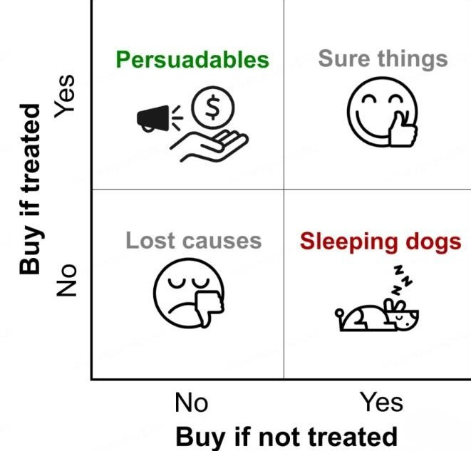

因果模型学习笔记
2025-08-26
1 le_uplift
找到真正能被营销手段激励的人群，在成本有限的情况下最大化营销的总产出。 
对人群做四象限的划分，横纵坐标分别是用户在有干预和无干预情况下的购买状况，左上角人群的购买状况在干预后发生了正向变化，如果不对这类人群进行干预，那他有可能是不购买的，但是干预之后的购买概率有极大提升，所以这类人群是我们真正想要触达的用户，即营销敏感人群。而其他人群比如第2类和第3类，在干预前后的购买状况没有变化，所以预算花费可能是浪费。右下角是一类比较特殊的人群，虽然其在干预前后的状态有跳变，但这种跳变不是我们希望看到的，因为确实有一些人群对营销是反感的，所以对这类人群我们应该极力避免触达。Uplift Model正是为了识别我们想要的营销敏感人群。